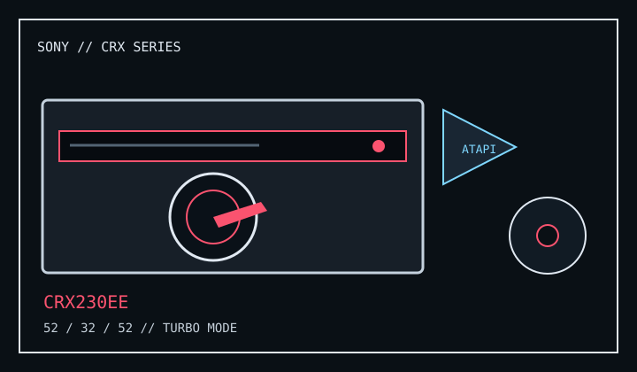

[ CD-R AND CD-RW DRIVES // IDENTIFIED MODEL ]
Sony CRX230EE
Internal ATAPI CD-R/RW writer; its listed maximums are 52× CD-R write, 32× CD-RW rewrite and 52× CD read.

IDENTIFICATION: Confirm CRX230EE on the rear label. Sony documents a Turbo Boost mode: the 52× peak may require the specified media and mode; default operation can be lower.
Documented specifications
| Exact model | Sony CRX230EE |
|---|---|
| CD-R write | Up to 52× (Turbo Boost; mode/media-dependent) |
| CD-RW rewrite | Up to 32× |
| CD read | Up to 52× |
| Supported media | Writes CD-R and CD-RW; reads supported Compact Disc data/audio and recordable media. Consult the manual for the disc type and application workflow in use. |
| Interface / bay | Internal E-IDE/ATAPI, 5-inch half-height bay; connect to an available ATAPI channel with DMA support. |
| Host compatibility | Sony's setup instructions specify a Pentium II 400 MHz-class system recommendation and an available E-IDE/ATAPI connection. Operation through an ATAPI adapter card is not assured; use compatible legacy recording software and OS drivers. |
| Firmware / jumper | Use only a firmware revision matching CRX230EE and its OEM identity. Set the rear IDE jumper per the unit label/manual for Master, Slave or Cable Select and the host channel; do not use CRX suffixes interchangeably. |
Compatibility and preservation
- Disc type, DMA mode, recording software, media speed and Turbo Boost selection affect achieved throughput.
- Record drive/firmware, host chipset, IDE cabling, software version and verification results alongside captured disc images.
- Use the exact manual revision before changing jumpers or firmware; do not flash an unrelated CRX230 variant.
Manufacturer and manual references
- Sony CRX230EE user manualModel-specific installation, system requirements and operating notes.
- Sony CRX230EE user manual archiveAlternate copy of the Sony model manual, including host and speed-mode information.